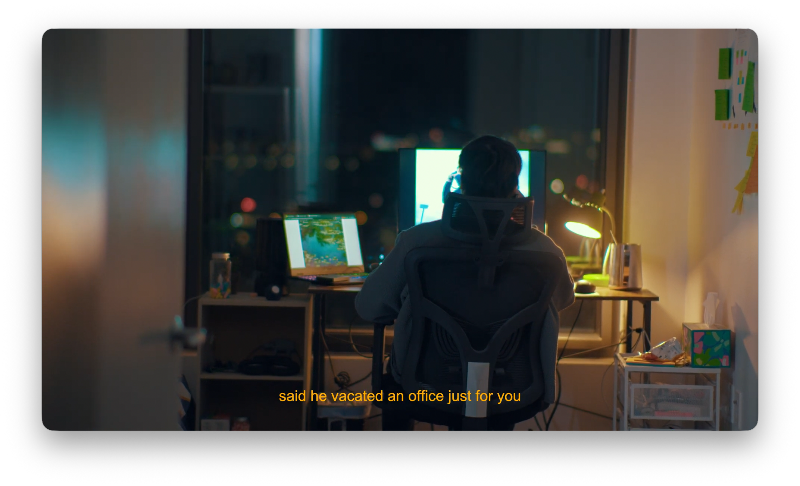
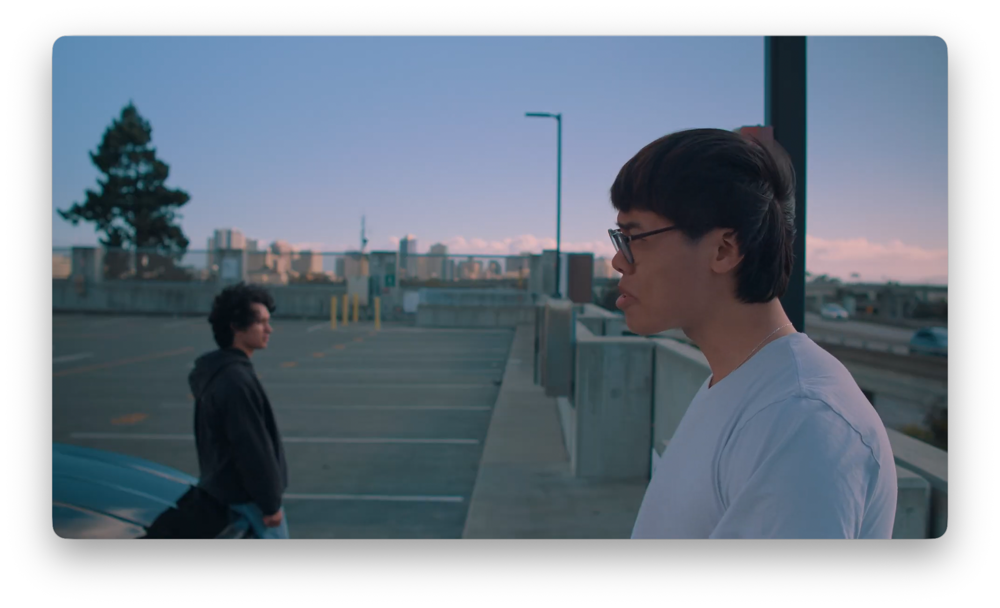
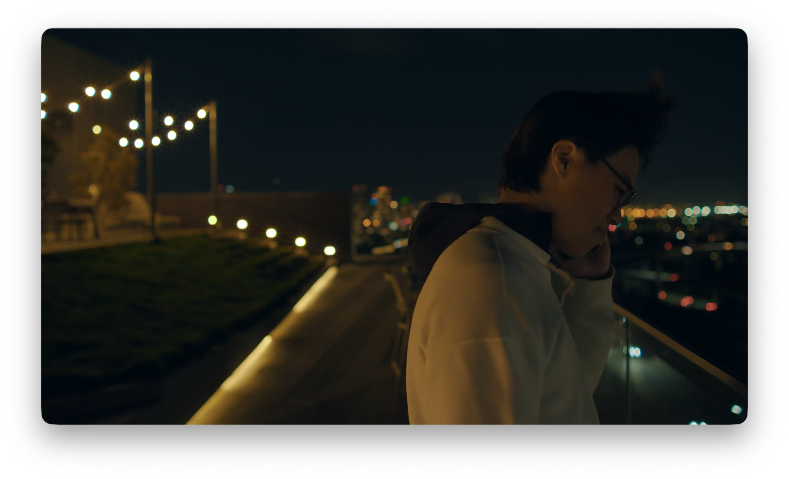
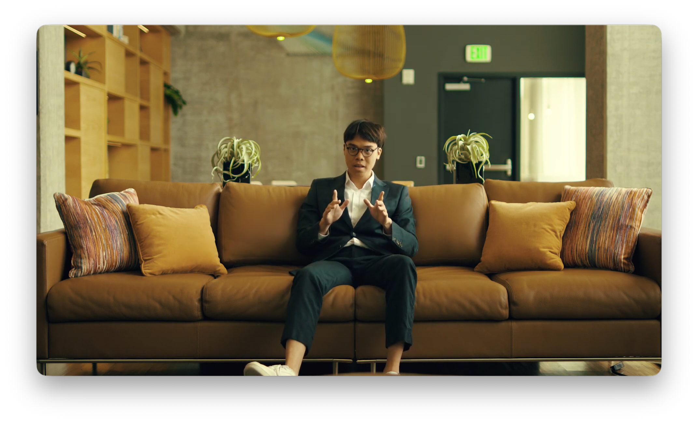

As a Videographer and Editor at UC Berkeley's Coleman Fung Institute for Engineering Leadership, I contribute to producing compelling visual narratives. My role involves creating impactful video content, leveraging skills in video production and teamwork to deliver engaging projects.
Currently pursuing a Master of Journalism at UC Berkeley with a focus on business reporting and data analysis, I bring an academic foundation in Film and Media Studies and Journalism. My dedication to storytelling through visual media reflects my passion for creating immersive and honest narratives. I aim to combine my academic pursuits with professional experience to excel in the field of visual journalism..




Positions
Video Producer
UC Berkeley Coleman Fung Institute for Engineering Leadership
Edited promotional materials in Adobe Premiere Pro, DaVinci Resolve, and Final Cut Pro.
Planned and executed short-form creator-style marketing campaigns across owned social channels (Instagram
Reels/Shorts), driving 1,000+ applications.
Maintained campaign trackers, timelines, and shared documentation to manage deliverables and iteration cycles in
ClickUp and Monday.com
Pulled basic performance metrics (reach, views, retention/engagement) and wrote quick reporting recaps to inform
next creative tests.
Supported production workflows end-to-end: asset organization, edit tracking, and final delivery for short-form
content.
Reporter
SF Business Times
Reported on the EV market in California, and how tariffs are not making EV adoption easier for the public
Managed end-to-end reporting workflow: outreach, interviews, editing, and final delivery
The piece broke news on the first day of 2026 as the top headline. Cover story in Feb print
Communication Associate
Community R&D
Conducted trend and competitive research on short-form formats and audio insights into creative test ideas.
Coordinated a one-day multi-location shoot; managed asset organization, edit rounds, and deliverables through
final export.
Delivered polished videos for social media, recruitment, and organizational storytelling,
ensuring brand consistency and narrative clarity.